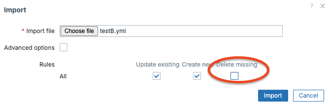

Filtering LLD Data Without JSONPath Filters in Item Keys
When working with Low-Level Discovery (LLD) in Zabbix, a common challenge arises when your master item returns a JSON array and you need each discovered item to fetch only its own slice of that data. The common approach is to use a JSONPath filter expression directly in the item prototype's preprocessing step:
This works, but it has a significant drawback: you are hardcoding the filter value. When Zabbix resolves LLD macros in preprocessing parameters, the expression becomes brittle and harder to maintain, especially when the filter value needs to be dynamic per discovered object.
The Two Approaches
Approach A — JSONPath filter (The more complex option)
In this approach a single trap item db.raw does everything: it feeds the discovery
rule and also serves as the master item for all item prototypes. The preprocessing
step uses a filter expression to extract the relevant row per discovered object:
Problems with this approach:
- The filter expression is verbose and hard to read at a glance.
- The
.first()function is required because the filter operator always returns an array, even when only one match exists. - Special characters make the expression more fragile and easier to get wrong.
- Debugging failed preprocessing is harder because the resolved expression changes per discovered item.
- A single key has to serve two structurally different purposes (list of objects for discovery, and a data source for value extraction), which limits how you can design each payload.
Data flow:
flowchart TD
A([zabbix_sender]) -->|db.raw| B[Trap item: db.raw]
B --> C["Discovery rule
Extracts: #123;#DB#125;, #123;#FILENAME#125;"]
B --> D["Item prototype
Dependent on: db.raw
preprocessing:
$[?(@.db == '#123;#DB#125;')].price.first()"]
Test payload:
zabbix_sender -z <your_zabbix_server> -s "DB-TEST-A" \
-k db.raw \
-o '[{"db":"database1","filename":"db1.conf","price":42},{"db":"database2","filename":"db2.conf","price":99}]'
Approach B — LLD macro as lookup key (the recommended pattern)
Instead of filtering by a field value in preprocessing, extract a unique identifier
(such as an id field) during LLD and store it as an LLD macro, {#ID}. That
macro then becomes part of the dependent item's key, and preprocessing uses a direct
path rather than a filter.
Two separate trap items are used intentionally:
| Key | Purpose |
|---|---|
db.raw |
Feeds the discovery rule — the flat list of objects to discover |
db.raw2 |
Feeds the item prototypes — structured data optimised for value extraction |
The key insight is in the design of db.raw2. Instead of a flat array where each
row contains all fields, db.raw2 is a single element array containing one object
whose top level keys are the {#ID} values themselves. This means each item prototype
can reach its own data with a direct path:
No filter operator. No .first(). No special character escaping.
Data flow:
flowchart TD
A([zabbix_sender]) -->|db.raw| B[Trap item: db.raw]
A -->|db.raw2| E[Trap item: db.raw2]
B --> C["Discovery rule
Extracts: #123;#DB#125;,
#123;#FILENAME#125;, #123;#ID#125;"]
E --> D["Item prototype
key: db.[#123;#ID#125;]
preprocessing: $[0]['#123;#ID#125;']"]
C -. "#123;#ID#125; is the bridge" .-> D
{#ID}. Its value in db.raw
(e.g. db1) must exactly match a top-level key in db.raw2. The
LLD macro path $.id extracts it from each object during discovery.
Test payloads:
# Step 1 — send the discovery payload
zabbix_sender -z <your_zabbix_server> -s "DB-TEST-B" \
-k db.raw \
-o '[{"db":"database1","filename":"db1.conf","id":"db1"},{"db":"database2","filename":"db2.conf","id":"db2"}]'
# Step 2 — send the item data payload (after discovery has run)
zabbix_sender -z <your_zabbix_server> -s "DB-TEST-B" \
-k db.raw2 \
-o '[{"db1":{"size":1024,"status":"ok","connections":12},"db2":{"size":2048,"status":"warn","connections":57}}]'
JSON Payload Design
The difference in payload structure is the foundation of the whole pattern.
Approach A — single payload, value embedded per row:
[
{"db": "database1", "filename": "db1.conf", "price": 42},
{"db": "database2", "filename": "db2.conf", "price": 99}
]
Approach B — two payloads with complementary structures:
db.raw (for discovery):
[
{"db": "database1", "filename": "db1.conf", "id": "db1"},
{"db": "database2", "filename": "db2.conf", "id": "db2"}
]
db.raw2 (for item value extraction):
[
{
"db1": {"size": 1024, "status": "ok", "connections": 12},
"db2": {"size": 2048, "status": "warn", "connections": 57}
}
]
The db.raw2 structure is wrapped in an outer array so that $[0] gives you
the object, and $[0]["db1"] gives you the full data block for that database
instance. You can extend the inner object with as many fields as needed without
changing the preprocessing expression.
Template: Approach A
Import this template to test the JSONPath filter pattern on a host group called
Databases.
zabbix_export:
version: '7.4'
host_groups:
- uuid: 748ad4d098d447d492bb935c907f652f
name: Databases
hosts:
- host: DB-TEST-A
name: DB-TEST-A (JSONPath filter approach)
groups:
- name: Databases
items:
- name: 'DB-TEST-A raw data'
type: TRAP
key: db.raw
value_type: TEXT
discovery_rules:
- name: 'Discovery DB'
type: DEPENDENT
key: discovery.db
enabled_lifetime_type: DISABLE_AFTER
enabled_lifetime: 1h
item_prototypes:
- name: '{#DB} - {#FILENAME}'
type: DEPENDENT
key: 'db[{#DB}]'
value_type: TEXT
preprocessing:
- type: JSONPATH
parameters:
- '$[?(@.db == ''{#DB}'')].price.first()'
master_item:
key: db.raw
master_item:
key: db.raw
lld_macro_paths:
- lld_macro: '{#DB}'
path: $.db
- lld_macro: '{#FILENAME}'
path: $.filename
Template: Approach B
Import this template to test the LLD macro key pattern on the same host group.
zabbix_export:
version: '7.4'
host_groups:
- uuid: 748ad4d098d447d492bb935c907f652f
name: Databases
hosts:
- host: DB-TEST-B
name: DB-TEST-B (LLD macro key approach)
groups:
- name: Databases
items:
- name: 'DB-TEST-B raw structure'
type: TRAP
key: db.raw
value_type: TEXT
- name: 'DB-TEST-B raw data'
type: TRAP
key: db.raw2
value_type: TEXT
discovery_rules:
- name: 'Discovery DB'
type: DEPENDENT
key: discovery.db
enabled_lifetime_type: DISABLE_AFTER
enabled_lifetime: 1h
item_prototypes:
- name: '{#DB} - {#FILENAME}'
type: DEPENDENT
key: 'db[{#ID}]'
value_type: TEXT
preprocessing:
- type: JSONPATH
parameters:
- '$[0]["{#ID}"]'
master_item:
key: db.raw2
master_item:
key: db.raw
lld_macro_paths:
- lld_macro: '{#DB}'
path: $.db
- lld_macro: '{#FILENAME}'
path: $.filename
- lld_macro: '{#ID}'
path: $.id
Warning
Create 2 files with the content from the above examples and import them as a host. When import make sure to not delete missing hosts.

Comparison Summary
| Approach A | Approach B | |
|---|---|---|
| Trap items | 1 | 2 |
| Preprocessing expression | $[?(@.db == '{#DB}')].price.first() |
$[0]["{#ID}"] |
| Filter operator needed | Yes | No |
.first() needed |
Yes | No |
| Item key | db[{#DB}] |
db[{#ID}] |
| Payload design | Single flat array | Two complementary structures |
| Readability | Verbose | More robust and easier to maintain in production |
| Debugging | Debugging happens inside a JSONPath expression (opaque, annoying) | Debugging is just “look at the raw item + extracted value” |
Note
Approach A is still fine for quick prototypes, small payloads, or one-off lab use; Approach B is preferable when you want stable preprocessing and clearer debugging. The tradeoff is slightly more setup (two items and data flow coordination), but this is usually outweighed by better clarity and maintainability.
Why Two Trap Items?
Separating db.raw and db.raw2 is a deliberate design decision, not just a side
effect of the pattern. It gives you independent control over two structurally
different payloads:
db.rawonly needs to list the objects to discover, with enough fields to populate LLD macros. It can be lightweight and change infrequently.db.raw2holds the actual monitoring data and can grow as you add more metrics per database. Its structure (keyed by{#ID}) stays stable regardless of how many fields you add.
Note
This separation also makes it easier to feed the two items from different collection sources or at different intervals in more advanced setups. Two trap items buy cleaner payload design, but they also mean you must think about send order and lifecycle more carefully.
Conclusion
By designing your JSON payload so that the unique identifier becomes both an LLD
macro ({#ID}) and a top level key in the data payload (db.raw2), each discovered
item can reach its own data with a simple, direct JSONPath expression. The result
is a more readable, maintainable, and debuggable discovery setup, with no filter
operator required.